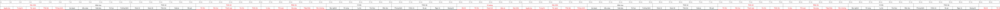
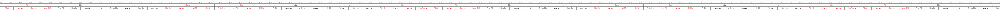
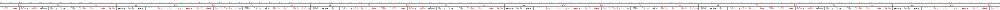
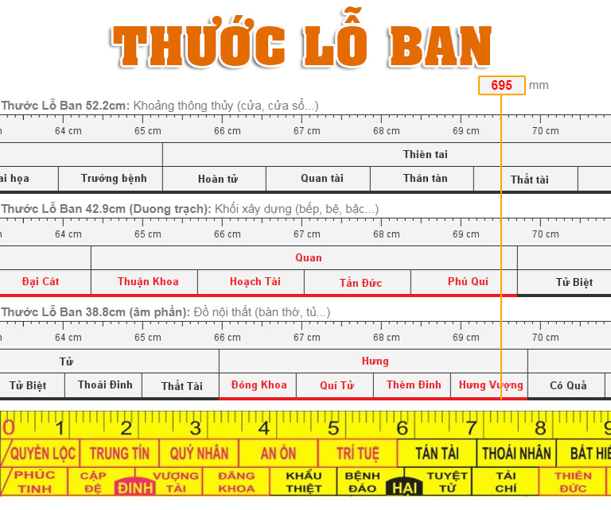

Hãy kéo thước
Thước Lỗ Ban 52.2cm: Khoảng thông thủy (cửa, cửa sổ...)
Thước Lỗ Ban 42.9cm (Dương trạch): Khối xây dựng (bếp, bệ, bậc...)
Thước Lỗ Ban 38.8cm (Âm phần): Đồ nội thất (bàn thờ, tủ...)
-   
Thước Lỗ ban là cây thước được Lỗ Ban, ông Tổ nghề mộc ở Trung Quốc thời Xuân Thu phát minh ra. Nhưng trên thực tế, trong ngành địa lý cổ phương Đông, ngoài thước Lỗ Ban (Lỗ Ban xích) còn có nhiều loại thước khác được áp dụng như thước Đinh Lan (Đinh Lan xích), thước Áp Bạch (Áp Bạch xích), bản thân thước Lỗ ban cũng bao gồm nhiều phiên bản khác nhau như các bản 52,2 cm; 42,9 cm…
Do có nhiều bài viết, thông tin về thước Lỗ ban có các kích thước khác nhau. Ở đây chúng tôi chỉ giới thiệu 3 loại thước phổ biến nhất trên thị trường Việt Nam hiện nay là loại kích thước Lỗ Ban 52,2 cm; 42,9 cm và 38,8 cm.
- Đo kích thước rỗng (thông thủy): Thước Lỗ Ban 52,2 cm
- Đo kích thước đặc: khối xây dựng (bếp, bệ, bậc…): Thước Lỗ Ban 42,9 cm
- Đo Âm phần: mồ mả, đồ nội thất (bàn thờ, tủ thờ, khuôn khổ bài vị…): Thước Lỗ Ban 38,3 cm
Bảng tra nhanh thước Lỗ Ban 52.2
1. Thước lỗ ban là gì?
Kích thước hợp phong thủy là vấn đề được quan tâm thứ 3 trong các vấn đề về phong thủy, chỉ sau hai yếu tố là ‘nhất vị, nhị hướng’. Do vậy, từ lâu các loại thước phong thủy như Đinh Lan, Áp Bạch, Lỗ Ban… đã rất phổ biến trong ngành địa lý cổ phương Đông.
Trong đó, được ưa chuộng tại Việt Nam và các nước Đông Á chính là thước Lỗ Ban. Thước được ứng dụng nhiều nhất trong xây dựng, kiến trúc nhà cửa, thiết kế phòng khách, phòng ngủ, phòng bếp và sản xuất đồ nội thất… nhằm đảm bảo cho các kích thước chuẩn với phong thủy, đem lại vạn sự cát lành, hưng vượng cho gia đình. Ngày nay, nhiều người xem thước lỗ ban online trực tuyến như một công cụ hữu ích trong việc xây dựng nhà cửa.
Thước Lỗ Ban có nguồn gốc từ Trung Quốc, trong quá trình du nhập vào Việt Nam và chuyển thể sang tiếng Việt có rất nhiều dị bản. Dữ liệu không nhất quán, khiến người dùng không biết nên sử dụng thước nào mới chính xác. Sau đây, chúng ta sẽ tìm hiểu sâu hơn về nguồn gốc, kích thước nguyên bản của thước Lỗ Ban.

2. Câu chuyện sáng tạo ra thước Lỗ Ban
Thời Xuân Thu (770 – 476 TCN), tại nước Lỗ (nay là tỉnh Sơn Đông, Trung Quốc) có một người làm nghề mộc rất giỏi, tên Ban, họ là Công Thâu (hay còn gọi là Công Du). Ông Ban rất giỏi nghề mộc và xây dựng, trong lịch sử Trung Quốc ông từng làm quan phụ trách về xây dựng.
Có giai thoại kể rằng, lúc ông Ban được sinh ra, những con sếu tụ tập quanh nhà và lan tỏa mùi thơm khắp mọi nơi. Người dân quanh vùng rất ngạc nhiên về điều này, họ cho đó là điềm lành và tin rằng ông là một vị thần sắp sửa được chuyển sinh thành người.
Ngay từ khi còn nhỏ, Lỗ Ban đã tỏ ra rất quan tâm đến nghề thủ công mỹ nghệ, nghề mộc và điêu khắc. Khoảng 15 tuổi ông đi học với thầy Đoan Mộc, chỉ vài tháng ông đã tinh thông nghề này. Nhiều năm về sau, cơ duyên cho ông gặp gỡ Cựu Bao. Họ hàn huyên với nhau khá lâu và cuối cùng Lỗ Ban nhận Cựu Bao làm thầy dậy vẽ, điêu khắc, chạm đá, làm mộc và sau đó trở nên nổi tiếng khắp nơi với nghề này.
Suốt cuộc đời của mình, ông có nhiều học trò và đã sáng tạo ra những công cụ kỳ diệu cho nghề mộc, xây dựng. Đặc biệt, nhận thấy kích thước hợp phong thủy rất quan trọng trong ngành nghề của mình, nên ông đã nghiên cứu về cuộc sống con người trong vũ trụ, sự tác động của thế giới bên ngoài tới sức khỏe và vận mệnh của con người. Từ đó, tạo ra những khoảng kích thước không gian biểu thị cho sự sinh tồn và suy thoái của con người. Và thước Lỗ Ban trong xây dựng nhà cửa ra đời từ đó.
3. Các loại thước Lỗ Ban thông dụng
Trên thước Lỗ Ban, có chia các kích thước thông thường, ứng với đó là các cung tốt, xấu. Kích thước đẹp sẽ ứng với cung màu đỏ, kích thước xấu sẽ ứng với cung màu đen. Từ đó, người dùng sẽ biết nên tránh kích thước nào và nên sử dụng kích thước nào.
Thước Lỗ Ban nguyên thủy chỉ dài 42,9 cm nhưng ở Việt Nam có 3 loại phổ biến nhất là thước Lỗ Ban 52,2 cm ; 42,9 cm và 38,8 cm ứng với các công dụng khác nhau:
- Thước Lỗ Ban 52,2 cm dùng để đo kích thước rỗng hay còn gọi là kích thước thông thủy, “lọt sáng”, “lọt lòng”, “lọt gió” trong nhà như: ô cửa sổ, ô thoáng, cửa chính, cửa sổ, giếng trời…
- Thước Lỗ Ban 42,9 cm dùng để đo kích thước đặc, các chi tiết xây dựng, đồ nội thất trong nhà như: kích thước phủ bì khối nhà, bệ, bếp, bậc, giường, tủ…
- Thước Lỗ Ban 38,8 cm dùng để đo âm phần như : bàn thờ, tủ thờ, khuôn khổ bài vị…
4. Hướng dẫn cách xem thước thước Lỗ Ban chuẩn nhất
Để sử dụng và đo thước Lỗ Ban một cách tốt nhất, cần phải nghiên cứu nó nghiêm túc và áp dụng một cách chính xác.
4.1. Cách xem thước Lỗ Ban 52,2 cm
- Chiều dài chính xác : 520mm.
- Chia làm 8 cung lớn, mỗi cung dài 65mm, theo thứ tự từ trái sang phải : Quý nhân, Hiểm họa, Thiên tài, Nhân lộc, Cô độc, Thiên tặc, Tể tướng.
- Mỗi cung lớn được chia thành nhiều cung nhỏ, mỗi cung dài 13mm.


4.2. Cách xem thước Lỗ Ban 42,9 cm
- Chiều dài chính xác: 492 mm.
- Chia thành 8 cung lớn từ trái sang phải, mỗi cung dài 53,625 mm : Tài, Bệnh, Ly, Nghĩa, Quan, Nạn, Hại, Mạng.
- Mỗi cung lớn chia thành 4 cung nhỏ, mỗi cung nhỏ dài 13,4 mm.


4.3. Cách xem thước Lỗ Ban 38,8 cm
- Chiều dài chính xác: 388 mm.
- Chia thành 10 cung lớn theo thứ tự từ trái sang phải, mỗi cung dài 38,8 mm: Đinh, Hại, Vượng, Khổ, Nghĩa, Quan, Tử, Hưng, Thất, Tài.
- Mỗi cung lớn lại được chia thành 4 cung nhỏ.


5. Ứng dụng của thước lỗ ban trong thực tế
Thước lỗ bạn được ứng dụng rất nhiều trong xây nhà cửa, thiết kế nội thất. Mọi người có thể sử dụng thước lỗ ban làm cửa nhà, xem thước lỗ ban bếp, thước lỗ ban bàn học và đo đạc thiết kế đồ dùng nội thất trong nhà đảm bảo các yêu cầu về phong thủy. Người ta sử dụng số đo thước phong thủy lỗ ban này để đáp ứng các nhu cầu kiến trúc nhà ở, nội thất… với mục đích giúp cho cuộc sống nhà ở có được nhiều điều tốt đẹp hơn.
Các loại thước lỗ ban thợ mộc, dương trạch, âm trạch có cách sử dụng khác nhau và có các cung mang ý nghĩa riêng biệt tùy theo việc lựa chọn dòng thước để ứng dụng cho công trình xây dựng hay thiết kế, kiến trúc.
6. Cách chọn cung khi sử dụng thước Lỗ Ban
Vạch đen là những vạch xấu, không nên dùng vào bất kỳ mục đích gì và ngược lại.
Tùy vào mong muốn điều tốt đẹp nào đó đến với gia đình, bạn nên sử dụng kích thước tương ứng với cung đó.
Ví dụ:
- Mong muốn về đường con cái, sử dụng các cung như Thêm đinh, Quý tử hoặc các cung nhỏ trong cung lớn Đinh...
- Mong muốn về tiền tài sử dụng các cung như Tài lộc, Hưng vượng...
- Mong muốn về đường Quan chức sử dụng các cung liên quan đến cung Quan...như Thuận khoa (thuận lợi đường công danh, học hành, thi cử) hay các cung Hoành tài, Phú quý...
- Mong muốn về cuộc sống an lành, hưng vượng thì sử dụng các cung như Lục hợp, Phú quý, Hưng vượng, Thêm phúc...
Ngày nay, người ta sẽ điều chỉnh để sử dụng được nhiều cung đẹp trong nhà. Tuy nhiên, cần phải sắp xếp phù hợp với nhu cầu sử dụng, kích thước tổng thể, cân đối giữa chiều ngang và chiều cao. Đặc biệt, cần chú trọng nhiều nhất tới kích thước cửa ra vào, bàn thờ, giường ngủ... Thước lỗ ban nội thất hỗ trợ trong việc lựa chọn và sắp đặt nội thất đảm bảo được tính thẩm mỹ và làm nổi bật một phong cách nghệ thuật cố định.
Thước lỗ ban ngày nay được ứng dụng rộng rãi trong kiến trúc xây dựng và nội thất, là yếu tố được coi là một phần của khoa học phong thủy. Kích thước hợp phong thủy là vấn đề được quan tâm thứ 3 trong các vấn đề về phong thủy, chỉ sau hai yếu tố Nhất vị, Nhị Hướng. Các kiến trúc sư của NaDu sử dụng thước lỗ ban phong thủy như là một công cụ không thể thiếu trong việc đo đạc, thiết kế nội thất để phù hợp với từng gia chủ khác nhau.